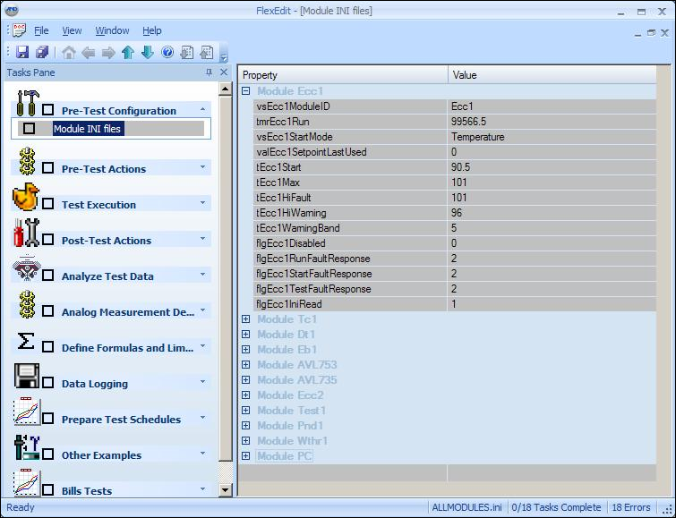

iTest User's Guide
FlexEdit is a generic framework that packages editors together into a workflow that can be customized for a given facility and testing methodology. This framework is compiled of the most frequent tasks that an operator must perform. This document describes this framework.
The following categories have been identified as an example list of tasks that an operator may perform prior to running the test.
Each category will likely be divided into specific tasks. Some example tasks from the categories listed above would be:
The FlexEdit framework consists of a new style MFC/C++ shell which has been designed to host various Document/View editors. The shell will consist of a tree view on the left which provides navigation between the categories and tasks, an editor interface on the right pane, and a message queue on the bottom of the frame. The prototype for this shell can be seen in the diagram below:
Diagram
FlexEdit configuration will be accomplished via an .XML file. This file will be used to define all of the categories and tasks and the specific behavior and appearance of each.
The primary tag in the FlexEdit will be <flexedit>. The tags described within this section will be children of the root tag - flexedit.
Categories will be defined in the <categories> element of the XML file. Each category will be defined with a <category> tag.
The <name> tag will define the name that appears in the tree for that category.
The <icon> tag will define the icon that appears in the tree for that category. This should be the full path to a filename on the local hard drive. The iTest Macros, $SUPPORTDIR and $SYSTEMDIR, are supported in the filename. The file can be an .exe file, an .ico file, or a .bmp file. In the case of an .exe file, it pulls the primary icon from the .exe. Category .bmp files must be 32x32.
Each category should have one or more tasks defined. These tasks will be defined in the <tasks> element of the .XML within the category.
The example below shows the proper XML for defining one category in the config file:
<categories>
<category>
<name>Device Configuration</name>
<icon>c:\windows\regedit.exe</icon>
<tasks>
<task>
:
:
The <tasks> element of a category will include one or more <tasks>. These will be started with the <task> tag.
The <name> tag defines the name that appears in the tree for that category.
The <icon> tag defines the icon that appears in the tree for that task. This should be the full path to a filename on the local hard drive. The iTest Macros, $SUPPORTDIR and $SYSTEMDIR, are supported in the filename. The file can be an .exe file, an .ico file, or a .bmp file. In the case of an .exe file, it pulls the primary icon from the .exe. Task .bmp files must be 16x16.
The <file> tag defines the file that is passed to the editor to work on. Most editors will be designed to work on one file at a time; however, some custom editors may actually read and write several files. This filename will be the primary filename that is passed to the editor.
When used with a pre-built mapping DLL, the <file> tag must list the config.drv file that the driver uses. In some cases, if the driver is associated with a Module, then the file name will be <mid>.config.drv and not config.drv.
A list of user groups which have access to this task. This tag is optional. If there are no groups listed, then all groups have access to it. Logged in members of the Administrator group ignore this tag (i.e., they can always access a task). Multiple groups can be specified:
<sections>
<section>Engineers</section>
<section>Operators</section>
</sections>
In order to enable security in FlexEdit, two requirements must be met. First, iTest must have security enabled, so the setting, iTestLogin=TRUE must appear in config.ini file. Second, at least one task must have a specific group listed.
The <backcolor> tag defines the background color of the window or tab. The color is defined by 3 numeric values in the range of 2 - 255. These comma separated values are in the order <red>,<green>,<blue> (e.g., 255,0,0 is red).
The <textcolor> tag defines the text or foreground color of the window or tab. The color is defined by 3 numeric values in the range of 2 - 255. These comma separated values are in the order <red>,<green>,<blue> (e.g., 255,0,0 is red).
The <maxchan> tag defines the maximum number of channels that can be added to the LOL file. This tag applies only to the LOL editor.
<category>
<name>LOL editor</name>
<tasks>
<task>
<name>blackbox2.LOL edit</name>
<file>$SUPPORTDIR\Data\blackbox2.lol</file>
<maxchan>200</maxchan>
</task>
</tasks>
</category>
The <enableoverwrite> element is used to define the filepaths that can be overwritten when using the Restore Configuration, Restore Tasks..., and Server Download features. By default, all filepaths allow their files to be overwritten.
<enableoverwrite> <path>c:\</path> <path>d:\itest4.1\storage\</path> </enableoverwrite>
Only files in this stored location may be overwritten by the Restore Configuration, Restore Tasks..., and Server Download features. Multiple <path> tags may be used. Any values must be lowercase.
The <editor> element is optional in many cases. For some files, the editor can be determined automatically based on the file extension. However, the editor element can be used to override the default editor and in some cases is required to provide more information about a specific file type. The editor element of the XML is defined in a later section of this document.
Single line tooltip to show when hovering over the node.
The <icentral> tag is optional. It defines the subfolder used to store the uploaded files in regards to both the Server Upload and Server Download functionality. If using a LabCental server, this would be a subfolder underneath the LabCentral Lab Files repository. If using a local network share via the <servershare> tag, then it would be a subfolder underneath that folder. For more information, refer to the Server Upload and Server Download section.
Set to FALSE to disable including this file when the operator selects to save an entire configuration (via the Save Configuration option). By default, every file will be included in the Save. The Save Configuration option will only be available to the operator if the config.ini file contains a reference to iCentral. See the <saveitems> tag in the Global Options section for more information on this feature.
The <actions> element is optional. It can be used to specify actions that occur when a task is first selected, re-selected, saved, unselected, and possibly other states. The actions element of the XML is defined in the Actions section of this document.
Disables functionality, at the task level, related to saving and restoring configurations and tasks. If a task includes this tag, then based on the <menu> tag(s) value, the Server Upload/Download button will be disabled and/or the task will be skipped when performing File > Save Configuration..., File > Restore Configuration..., or File > Restore Tasks.... The relevant task actions will also not be performed.
<disablemenulist> <menu>Save Configuration</menu> <menu>Restore Configuration</menu> <menu>Restore Tasks</menu> <menu>Server Upload</menu> <menu>Server Download</menu> </disablemenulist>
Stores the name of the operation you want to disable. The full list of supported operations is detailed under the description of the <disablemenulist> tag.
Help lines can add text to give to the operator when the help button is pressed. Some of the editors have built-in help. These tags will override the built-in help text.
The height and width of the help dialog can be controlled using "height" and "width" attributes in the <help> element. This also impacts the displayed dimensions of a browser control within this dialog.
<help height="100" width="200">iTest rox</help>
HTML can be used by the <help> element in the following ways:
<help><![CDATA[<html>helloworld!</html>]]></help>
<help>http://www.google.com</help>
 |
NOTE: | You must include http:, https:, or file: if using this method. |
<help>FlexEditHelp\Main.html</help>
The default value is true to show the checkbox. Set this option to false to not show the checkbox.
Default value is true. Set this option to false to make the box only be checkable programmatically.
This tag contains the name of an iTest channel that controls whether the task data can be saved. A value of zero allows the data to be saved. A non-zero value inhibits the saving of the data.
Example:
<inhibitsavechannel>voInhibitFlexEditSave</inhibitsavechannel>
This tag only applies to INI editor. It is used the specify the text for the button displayed at the bottom of the property grid when a BUTTON event is added to an INI task.
Example:
<buttontext>OK</buttontext>
This element is used in conjunction with both the Save Configuration and Server Upload operations to modify the files that are saved. For each file, add it under this tag and enclose with the <item></item> tag.
If the task containing this element launches a plugin DLL, then the listed files will be saved in addition to the files normally saved by the plugin DLL. For all other types of tasks, the files listed under the <saveitemlist> tag will be saved instead of the default files normally saved by the task. For some editors, such as the AIM/AOM editors, it is strongly recommended that the default files always be included in the <saveitemlist> element, because not including these files can result in unexpected consequences.
The default files, by editor, are as follows:
This tag unlocks the Duplicate and Delete right-click options on a Task's node in the FlexEdit tree bar.
Duplicate
Delete
An example of a <task> element of the XML appears below.
<code class="xml">
<task>
<name>CAN Devices</name>
<file>https://aanddtech.com/</file>
<icon>$SYSTEMDIR\Art\icons\computer.ico</icon>
<backcolor>255,0,0</backcolor>
<textcolor>255,255,255</textcolor>
<help>Help line 1</help>
<help >Help line 2</help>
</task>
</code>
The <editor> element is contained within a <task>. This element is used to either override the default editor for a given file extension, define an editor for unknown file extensions, or provide more information required for files.
The following table summarizes the built-in rules of FlexEdit for assigning file extensions to editors and also lists the built-in editors that will be available for the first release of FlexEdit.
File Extensions
| File Extension(s) | Editor |
| .2dt | iTest .2dt (Maps) file editor |
| .aka | iTest Customer Name Editor |
| .als | iTest Alias Editor |
| .dat | iTest Dynamic Calculation Editor |
| .dll | FlexEdit plugin – defined below |
| .drv | iTest Driver Tdaddin editor |
| .dsp | iTest Display (Runtime) |
| .exe | Launches the executable in new window. Supports modal or modeless. |
| .ini | Generic INI File editor |
| .lim | iTest Limit file editor |
| .lol | iTest Log Order List file editor |
| .sc2 | iTest SC2 editor |
| .html, .pdf, .htm | Generic Browser View ... ( FlexEdit acts as a viewer, not an editor. ) |
| .txt, .log, .cfg | Generic text editor |
The first tag in the <editor> element is the <type> tag. This tag is used to override a given file extension with a different built-in editor, provide an editor to use for an unknown file extension, provide an editor to use with a pre-built mapping DLL, or define editors that are not related to a specific file. The generic types available in the first release of FlexEdit will be as follows:
When used with a pre-built mapping DLL, the <type> tag contains the name of the device, as listed in the config.drv or <mid>.config.drv file (e.g., <tag>CanNeo0_HS1</tag>).
Which DLL to use for a DLL plug-in type editor.
Defines the field configuration for a INI editor. For more information, refer to the section Defining the Fields for an INI Editor.
Set to TRUE to launch an .EXE style editor with the modal option. That is, the operator will be unable to interact with FlexEdit until the EXE interface is dismissed.
Set to TRUE to show units in an INI editor. This will show the channel name or prompt followed by the channel's units in braces if it has them.
MaxSpeed [RPM]
This tag is only used for the Log Order List (LOL) editor and INI Editor (INI). It allows the user to specify a list of either .LOL or .AKA files which are used to define the set of channels which the user can add to the current file. (This feature should only be used for active customer name files; inactive .aka files should not be included in the list.) For example:
<task>
<name>Main Data Log</name>
<icon>$SYSTEMDIR\Art\icons\floppy disk2.ico</icon>
<file>$SUPPORTDIR\Data\Main2.lol</file>
<editor>
<channellistfiles>
<file>$SUPPORTDIR\data\main.lol</file>
<file>$SUPPORTDIR\db\customer\caspc.aka</file>
</channellistfiles>
</editor>
</task>
This tag is only used for the AIM and AOM editors. It is an indication to only add analog inputs and analog outputs to the display that have the User Defined 1 RDB field value set to non-zero. The default value for this option is FALSE. If it is FALSE, all analog inputs and analog outputs are added to those displays. For more information, refer to the Customizing the AIM/AOM Editors documentation.
This tag is only used for the AIM, AOM, and DYNCALC editors. User can specify an .aka file for these three editors to save new customer names to. If the specified .aka file not found, it will be created and set as an active .aka file.
 |
CAUTION: | The file designated by this tag will not be included as part of an upload using the Server Upload feature. It is included as part of an upload using the Save Configuration feature. |
This tag is only used for AIM and AOM editors. This will show the Alias2 column between the Channel Name column and the Customer Name column.
Currently only used for AIM and AOM editors when <showalias2> is true. This is the text to use for column header instead of Alias2.
Currently only used for AIM, AOM, and INI editors. Its behavior is dependent on the editor type. If this tag is not used, the behavior defaults to TRUE.
This element is only supported for LOL types. It allows you specify the names of channels that cannot be removed from the LOL file. Add a <name> tag underneath this for each channel. Note that the name specified can use the asterisk or '*' as a wildcard character to match multiple channel names. These settings will override any <nodeletenames> specified for <globaleditor>.
This tag is only used for the INI Editor (INI). This tag enables you to load all module INI files that use the following naming convention:
[MID][Keyword].ini
Where:
<filenamesubstring> tag of the XML file.This tag must be used in conjunction with the <file>allmodules</file> tag. For more information, refer to the Configure INI Editor to Display Module INI Files section.
This tag is only used for the Can and Asap pre-built DLL plugin editors. The tag provides for an automatic, case-sensitive filter of the list of available iTest channels for mapping when an Input interface is selected. Wildcards are not supported in the filter string. The Filter field in the editor can be used to further pare down this list.
Example:
<inputchannelfilter>In</inputchannelfilter>
Example of Input Channel Filter
This tag is only used for the Can and Asap pre-built DLL plugin editors. The tag provides for an automatic, case-sensitive filter of the list of available iTest channels for mapping when an Output interface is selected. Wildcards are not supported in the filter string. The Filter field in the editor can be used to further pare down this list.
Example:
<outputchannelfilter>Out</outputchannelfilter>
Example of Output Channel Filter
INI files are typically name=value pairs where the name refers to an iTest channel or customer name and the value is assigned to that channel in the RDB. Defining the fields for an INI editor can be done by modifying the tags in the .XML file or by directly modifying the .INI file.
To define the fields using XML, use the <values> XML element.
Each <value> element can be further defined by:
Defines the name portion of the name=value pair listed in the INI file. When the INI editor is saved, FlexEdit will update both the value stored in the .INI file and the iTest channel's value.
Advanced Usage of <name> field
The <name> field can actually be a single channel name or a pair of channels. In the case of the channel pair, the two channels are separated by a comma. When the INI form is saved, the first channel will be populated with the filepath for the selected file and the second channel will contain the base filename. This is helpful in getting around the iTest limitation of 128 bytes per Virtual String channel. Note that using a compound name is not supported when using the <nameonly> tag as there is no separate path to retrieve in this case.
An example of the compound name field follows:
<value>
<name>PathChan,FileChan</name>
<label>My Prompt<label>
<type>File</type>
<len>127</len>
</value>
Defines the label or heading used for that cell in the editor. The label replaces the name in the cell.
Defines the field's data type. Values include:
Notes:
For EDIT or COMBO types, this is the maximum number of characters that can be typed in. For NUM types, it is the maximum number of digits in the integer portion of the numeric value. A plus or minus is included in the total. If <precision> is also in effect, then the maximum number is increased by the value of <precision> plus one more for the decimal point.
For example, the value -123.12 would have a <len> value of 4 and a <precision> value of 2.
Note that <len> and <precision> control how the numeric value is displayed in the editor. They also control the check for the maximum number of digits that can be entered. If too many digits are entered, then the "Channel_xxx has too many digits, the limit is N" message will be displayed in a message box and the newly entered value will be discarded. The value of N is <len> plus <precision> plus one.
If this tag is missing and <type>=NUM, the default <len> value is 16. For all other types, the default <len> value is 127.
Number of digits of precision for numeric types. Use 0 for integers. If this tag is missing and <type>=NUM, then the default <precision> tag value is 6. If the number of entered digits is less than the <precision> value, then the entry will be padded to the right with zeros. For example, <precision>=6 and entered 0.12 will result in 0.120000 appearing in the editor.
For NUM types, the value you enter must be greater than or equal to this value. If not, you will get a popup error message.
For NUM types, the value you enter must be less than or equal to this value. If not, you will get a popup error message.
For EDIT, types you can specify invalid text strings which should not appear in the entered text. If one of these values is found, you will get a popup error message.
For some text, you must use the XML encodings (<,>,&,", etc). Also, some characters (single whitespace, for instance) might need to be enclosed with <![CDATA[ ]]> in order to work correctly. Here is an example declaration of an edit field that forbids less than, greater than, and space characters:
<code class="XML">
<value>
<name>Edit1</name>
<type>EDIT</type>
<invalidtext>
<text><</text>
<text>></text>
<text><![CDATA[ ]]></text>
</invalidtext>
</value>
</code>
For FILE or FOLDER types, specifies the initial directory of the selection dialog when it is first displayed.
For FILE types, specifies the contents of the file type pulldown in the selection dialog. Here is a sample setting that configures the filter to show .txt or .ini files:
<code class="XML"> <filter>TXT Files (*.txt)|*.txt|INI files (*.ini)|*.ini|<filter> </code>
For FILE types. When set to true, if the user types in a filename that is non-existent, then they will get an error message and not be able to close the file selection dialog.
For FOLDER types, specifies the root of the filesystem tree in the folder selection dialog. No ancestors of the specified path will be able to be selected in the dialog.
For FOLDER types, specifies whether the New Folder button will be available on the folder selection dialog. Default value is false.
For FILE and FOLDER types, specifies that only the file/folder name will be returned instead of the full path. Default value is false.
For picklist or combo types, this defines the picklist file to use.
The <readonly> tag prevents fields from being editable. To make a field read only, set this setting to TRUE; otherwise, set the setting to FALSE.
By default, the data from the .INI file is displayed in the same order as it appears in the .INI file. When the tag <sortvalues>TRUE</sortvalues> is in effect, the channel names (or labels) within each section will be sorted alphanumerically.
When <values> are in effect, only the <name> or <label> that is listed in the <values> element is displayed. <showallchannels> forces the remaining data from the .INI file to be displayed.
Example:
<code class="XML">
<sort>FALSE</sort>
<values>
<value>
<name>spdDt1DynoMax</name>
<label>Max Dyno Speed</label>
<type>NUM</type>
<len>5</len>
</value>
<value>
<name>vsSysDynoType</name>
<type>EDIT</type>
<len>10</len>
</value>
<value>
<name>valDt1DynoInertia</name>
<label>Dyno Inertia</label>
<type>NUM</type>
<len>5</len>
<precision>2</precision>
<readonly>TRUE</readonly>
</value>
<value>
<name>valDt1DynoEncoderRes</name>
<type>COMBO</type>
<picklist>modules.pkl</picklist>
</value>
</values>
</code>
These tags control the background and text colors used to display the headings and properties. The color of the lines can also be controlled. The colors are defined by 3 numeric values in the range of 2 - 255. These comma separated values are in the order <red>,<green>,<blue> (e.g., 255,0,0 is red).
Specify the background color for property and value fields.
Specify the text color for property and value fields.
Specify the background color for the header field.
Specify the text color for the header field.
Specify the color of the lines that divide the fields.
Example:
<code class="XML">
<editor>
<type>ini</type>
<backgroundcolor>128,128,128</backgroundcolor>
<textcolor>255,255,255</textcolor>
<sectionbackgroundcolor>255,255,255</sectionbackgroundcolor>
<sectiontextcolor>0,0,0</sectiontextcolor>
<linecolor>0,0,255</linecolor>
</code>
Line Color Example
The <sections>, <section>, and <name> tags are options that allow the creation of display headers and control the grouping of <values> under the headers. A <value> contains a <name> tag that defines the iTest channel that will be displayed under the display header. The header from the .INI file is ignored. The iTest channels are displayed in the order that the <sections> are defined. <sections> and <values> are not sorted.
This tag begins the declaration of sections.
This tag begins the declaration of a specific section.
The name tag declares the name of the section. This name will be displayed as the header name.
The values tag declares the values that are placed in the section. These values will be displayed as the properties within the header.
Example:
This XML...
<code class="XML">
<editor>
<type>ini</type>
<sortvalues>TRUE</sortvalues>
<showallchannels>FALSE</showallchannels>
<backgroundcolor>128,128,128</backgroundcolor>
<textcolor>255,255,255</textcolor>
<sectionbackgroundcolor>255,255,255</sectionbackgroundcolor>
<sectiontextcolor>0,0,0</sectiontextcolor>
<linecolor>0,0,255</linecolor>
<sections>
<section>
<name>Section 1</name>
<values>
<value>
<name>vsSysDynoType</name>
<type>EDIT</type>
<len>10</len>
</value>
<value>
<name>spdDt1DynoMax</name>
<label>Max Dyno Speed</label>
<type>NUM</type>
<len>5</len>
</value>
</values>
</section>
<section>
<name>Section 2</name>
<values>
<value>
<name>valDt1DynoInertia</name>
<label>Dyno Inertia</label>
<type>NUM</type>
<len>5</len>
<precision>2</precision>
<readonly>FALSE</readonly>
</value>
<value>
<name>valDt1DynoEncoderRes</name>
<type>COMBO</type>
<picklist>modules.pkl</picklist>
</value>
</values>
</section>
</sections>
</editor>
</code>
Combined with this .INI file...
[Header 1] spdDt1DynoMax=6000 vsSysDynoType=GE AC Dyno [Header 2] valDt1DynoInertia=1.23 valDt1DynoEncoderRes=60 [Header 3] other1=0 other2=abc abc123= def456=
Produces this display...
Display Example
The allmodules special value for the <file> tag is used to display all module INI files. The module ids are located in $SUPPORTDIR\VXI\sources.ary. The INI substring is then appended to each module id, and these INI files are concatenated into a single file called allmodules.ini. The content of allmodules.ini is then displayed in the editor. When edits are saved, the content of allmodules.ini is written back to the individual INI files.
An optional tag called <filenamesubstring> is used to load all module INI files that use the naming convention: [MID][Keyword].ini. The example, FlexEdit.xml, shown below will load all the [MID]load.ini files.
Example:
<code class="XML">
<task>
<name>Module INI files</name>
<file>allmodules</file>
<editor>
<type>ini</type>
<filenamesubstring>load</filenamesubstring>
</editor>
</task>
</code>
Module INI Files

To provide a generic file editor for INI files is a relatively simple task; however, it may be necessary to embed more information in the INI files to provide a richer interface for the operator to enter information. The FlexEdit editor will support additional configuration information provided in the comments section of the INI files in order to provide a better editor. This section describes those comments. Each relevant comment section should appear on the line above the name=value pair being configured.
An INI configuration line should appear as a comment (starting with asterisk) with this format:
*label=â€Enter Value†type=EDIT len=10 precision=2 picklist=picklist.pkl readonly=true
The type= entry is required. The others are optional.
Configuration Options
| Option | Description |
| label | Defines the label or heading used for that column in the editor. |
| type | Defines the type of data in the column. The value can be one of NUM, EDIT, PKL, or COMBO for numeric types, edit types, read-only, picklist types, or a combination of edit/picklist. |
| len | For EDIT or COMBO types, this is the maximum number of characters that can be typed in. For numeric types, it is the number of digits. |
| precision | Number of digits of precision for numeric types. Use 0 for integers. |
| picklist | For picklist or combo types, this defines the picklist file to use. |
The INI editor will also group sections together, so dividing the editor into sections, such as [section1], [section2], etc., will provide a like grouping of options in the INI editor. The INI editor view will have a layout similar to the following screen:
INI Editor
These options apply to the entire tool and not to any specific category or task.
This XML element allows you to define extra commands to be performed during some events that are in addition to any commands defined within a <task>. Currently, the only supported events are before or after a Restore Configuration operation. The actions element of the XML is defined in the Actions section of this document.
Normally, FlexEdit will only allow one editor to be specified per file. To allow multiple editors to write to the same file requires an exclusion list to be specified for those files. This element creates that list.
<allowmultipletasks>
<file>$SUPPORTDIR\config.drv</file>
</allowmultipletasks>
When debugging is enabled, then a separate log file (FlexEdit_Debug_<date>.log) is created as well as a new window in the output pane. Task file open and file save calls are logged there, as well as any of the actions and events associated with a task.
If <candebug>true</candebug> then Messages and Signals buttons appear for CAN bus editing.
Specify the homepage for the main HTML landing page within FlexEdit. The default value for this page is <home>$SYSTEMDIR/Execute/WWW/FlexEdit.htm</home>.
Specifies the text color for read-only cells, rows, and columns in the spreadsheet. Supported editors are as follows: LIM, AKA, AIM, AOM, CAV, LOL, ALS, DYNCALC, and INI.
This tag currently has the following limitations:
<readonlytextcolor>128,128,128</readonlytextcolor>
This XML element allows you to designate additional files to be included in the .zip file generated by the Save Configuration operation. These files will also be restored as part of the Restore Configuration operation. Since the scope of the Server Upload operation is limited to only the selected <task>, this element is not used by Server Upload.
Use <file> tags to designate the files to be saved.
<saveitems>
<file>$SUPPORTDIR\powertek.ini</file>
</saveitems>
Set this to true so that when the save all modified dialog appears, it will display the task name instead of filename and path.
If you do not have LabCentral and want to save and restore specific files or full configurations, this option will allow the use of a servershare without any revision control.
<servershare>\\server\sharename</servershare>
Set to FALSE to disable the tabbed document view within FlexEdit. This will give it a Single Document Interface sort of appearance as opposed to a Multi-Document interface.
If LabCentral is connected, the operator can upload and download individual files from LabCentral. Use the upload tag to turn off only the upload button. This will allow the operator read-only access to LabCentral. The default value for this option is TRUE. Set to FALSE to disable the upload button on the toolbar.
Use this section of the XML to customize the columns for any spreadsheet style editor that supports global customization. Customization is the ability to define which columns are present in the editor and the order of the columns. Each column should represent a specific RDB field in most cases. Defining an entry in this element will affect every instance of the editor in the configuration. Not all editors support global customization, so each tag description will note which editors are supported.
The tags for this element are normally at the top of the XML file and the main tag, <globaleditors>, should be a child of the root <flexedit> tag.
An example syntax is as follows:
<globaleditors>
<globaleditor>
<type>lim</type>
<columns>
<column>
<label>Name</label>
<rdbfield>Customer Name</rdbfield>
</column>
<column>
<label>Alias</label>
<rdbfield>Alias</rdbfield>
</column>
</columns>
</globaleditor>
<globaleditor>
<type>lol</type>
<nodeletenames>
<name>voTest1</name>
</nodeletenames>
</globaleditor>
</globaleditors>
Specifies the file type that is being customized. Currently only LOL, LIM, DYNCALC, AKA, AIM, and AOM types are supported.
The <nodeletenames> element is only supported for the LOL type. It allows you to specify the names of channels that cannot be removed from the LOL file. Add a <name> tag underneath this for each channel. Note that the <name> tag allows use of an asterisk or '*' as a wildcard character to match multiple channel names. This element can be overridden by using the <nodeletenames> element within a <task> element.
The <fixedchannel> tag is only supported for the DYNCALC type. Valid values are true/false, with it defaulting to false. If set to true, then the user will be unable to add/remove lines in the dynamic calculation file. They will also be unable to change the Channel Name field. Calculations can be removed by clearing the Formula column. Doing so will cause the line to be commented out in the dynamic calculation file. The calculation for that channel can be re-enabled by adding a formula in the Formula column.
The <fixedcol> tag is only supported for the LIM, AIM, AOM, and AKA types. It enables you to scroll through the editor horizontally while maintaining a fixed view of a defined column. All columns to the left of and including the specified column are visible, regardless of scrolling. The syntax for this tag is <fixedcol>[RDB Field Name]</fixedcol>, where the [RDB Field Name] would be "Customer Name", "Units Label", etc.
The <hiddenchannels> element is only supported for the LIM type. Any channels that match the specified name(s) will not appear in the editor. Add a <name> tag underneath this element for each channel that is not to be listed. The use of asterisks as wildcards is permitted in the <name> tag.
As an example, the following element will cause all channels that have the flg string in them to not be displayed:
<hiddenchannels> <name>*flg*</name> </hiddenchannels>
The <limitinactivecolor> tag is only supported for the LIM type. If this color is specified, then rows where the channel limits are inactive will have the background color set to this color. The syntax for this tag is <limitinactivecolor>rgb(xxx,xxx,xxx)</limitinactivecolor>.
The column element is only supported for LIM, AKA, AIM, and AOM types, and has three options:
Only the rdbfield tag is required for a column. The other two tags are optional.
For AIM and AOM types, the column element is only used to specify read-only columns, not which columns will be displayed.
For LIM types, the column element is used to configure the displayed columns. This applies to all instances of the editor and will only work with non-Legacy limits, i.e. LimitsVer=3.2. If you are using legacy limits and you specify the globaleditor element for .lim files in your FlexEdit.xml file, you will receive an error message and you will get the traditional Test Manager version of the limits editor.
The following fields are considered writable with this editor:
Every other RDB field added to the editor is considered read-only.
In addition to RDB fields, there are three columns that can be added that are not in the RDB. These values come from the limit group file or the Module settings. The columns can be added to the limit editor with these <rdbfield> names:
Note:
For AKA types, the column element is used to configure the displayed columns. The default columns are Channel Name, Customer Name, Alias, and Units.
The following list details the editor's behavior depending on the tags present/not present:
<globaleditors>
<globaleditor>
<type>AKA</type>
<columns>
<column>
<label>CommentAlias</label>
<rdbfield>Alias</rdbfield>
</column>
<column>
<label>ChanName</label>
<rdbfield>Channel Name</rdbfield>
</column>
<column>
<label>Units</label>
<rdbfield>Units Label</rdbfield>
</column>
<column>
<label>Desc</label>
<rdbfield>Description</rdbfield>
<readonly>TRUE</readonly>
</column>
</columns>
</globaleditor>
</globaleditors>
The actions element is used to automatically perform one or more commands. These actions may be triggered through a global event, such as performing a Restore Configuration operation, or through events tied to a task.
 |
WARNING: | FlexEdit does not wait for an action to be completed unless the <completechannel> tag is present. |
An example syntax is as follows:
<?xml version="1.0" encoding="UTF-8"?>
<flexedit>
<title>FlexEdit Sample</title>
<home>$SYSTEMDIR/Execute/WWW/FlexEdit.htm</home>
<debug>true</debug>
<tabs>true</tabs>
<actions>
<action>
<event>BEFORERESTORECONFIGURATION</event>
<command>MAILSLOT</command>
<commandargs>SOFTPANEL>>DEBUG: global pre restore action performed</commandargs>
</action>
<action>
<event>AFTERRESTORECONFIGURATION</event>
<command>MAILSLOT</command>
<commandargs>SOFTPANEL>>DEBUG: global post restore action performed</commandargs>
</action>
</actions>
<categories>
<category>
<name>FlexEdit Sample</name>
<tasks>
<task>
<name>Test Notes</name>
<file>$SUPPORTDIR\TestNotes.txt</file>
<action>
<event>BEFORERESTORECONFIGURATION</event>
<command>MAILSLOT</command>
<commandargs>SOFTPANEL>>DEBUG: task pre restore action performed</commandargs>
</action>
<action>
<event>AFTERRESTORECONFIGURATION</event>
<command>MAILSLOT</command>
<commandargs>SOFTPANEL>>DEBUG: task post restore action performed</commandargs>
</action>
</task>
</tasks>
</category>
</categories>
Each action starts with the <action> tag and also contains the following tags:
The <event> tag defines what event this action is associated with. The event can be one of:
Events
| Event | Location | Details |
| SELECT | Task | An action designated with event SELECT will fire every time the task becomes the front-most editor in the right pane, including the first time. This can occur either by clicking on the node in the Tree Bar or by switching to its tab in the editor interface (right pane). A task is still considered the selected task, even if its editor is closed, until another task has been selected. |
| FIRSTSELECT | Task | The FIRSTSELECT event only occurs the first time a task becomes the front-most editor in the right pane. |
| UNSELECT | Task | Action occurs when a selected task is no longer selected. |
| BEFORESAVE | Task | Action is triggered before a successful save is reported. When used with Save All, only editors that have unsaved changes will trigger an action. |
| AFTERSAVE | Task | Action is triggered after a successful save is reported. When used with Save All, only editors that have unsaved changes will trigger an action. |
| BEFORESAVECONFIGURATION | Task | Triggered by both the Server Upload and Save Configuration operations. The action is not triggered if the operation is cancelled. |
| AFTERSAVECONFIGURATION | Task | Triggered by both the Server Upload and Save Configuration operations. The action is not triggered if the operation is cancelled. |
| BEFORERESTORECONFIGURATION | Task | Triggered by both the Server Download and Restore Configuration operations. The action is not triggered if the operation is cancelled. |
| Global | Triggered by Restore Configuration operations. The action is not triggered if the operation is cancelled. | |
| AFTERRESTORECONFIGURATION | Task | Triggered by both the Server Download and Restore Configuration operations. The action is not triggered if the operation is cancelled or if there is an error causing the restore/download to be aborted. |
| Global | Triggered by Restore Configuration operations. The action is not triggered if the operation is cancelled or if there is an error causing the restore/download to be aborted. | |
| ERRORRESTORECONFIGURATION | Task | Triggered by both the Server Download and Restore Configuration operations. The action is only triggered if there is an error during the restore which caused the operation to be aborted. An example error condition would be if a file was missing from the .zip file. This event prevents any following AFTERRESTORECONFIGURATION actions. |
| Global | Triggered by Restore Configuration operations. This event prevents any following AFTERRESTORECONFIGURATION actions. | |
| BUTTON | Task | The BUTTON event is only recognized by the INI editor. Adding this event to an INI editor task will cause a button to appear at the bottom of the property grid. Clicking it will run any BUTTON actions added to the Task. |
| CLICK | Task | The CLICK action is executed every time that a task is clicked on in the Tree Bar, regardless of whether it was already selected or the document was already open. |
Note: BEFORERESTORECONFIGURATION and AFTERRESTORECONFIGURATION follow a specific timeline of event handling, as follows:
The <command> tag defines what command to run as part of this action. This can be one of the following:
This is the argument for the MAILSLOT, EXE, or MSG commands. The mailslot args should be structured as mailslot>>message. For example, to send a message to the Softpanel message queue when a task is first entered, use this <action>.
<action>
<event>FIRSTSELECT</event>
<command>MAILSLOT</command>
<commandargs>Softpanel>>Hello World</commandargs>
</action>
This is the name of a channel that will be set to 0 before the action is started. After FlexEdit sets the channel value, the action is started. The channel must then be set to a non-zero value for FlexEdit to consider the action completed and continue on. If the <timeout> tag is missing, there is a default 10 second timeout.
|
NOTE: | This tag is optional. |
This setting is used in conjunction with the <completechannel> setting. It should be set to a number. This is the number seconds that FlexEdit will wait for the <completechannel> to become non-zero. If after this amount of time the channel has not changed, then FlexEdit will issue a message in the Error window and will continue executing.
|
NOTE: | This tag is optional. |
FlexEdit is a tool that allows you to modify your test solution configuration. The resulting configuration is saved and outputted as a *.zip file, either to a LabCentral server or to a local folder. At a later time, these same files can be used to restore your test solution configuration to a known state. You may also restore other files, regardless of file type.
When saving the configuration to a LabCentral server, the file structure, is as follows:
under Lab Files: ..\Repository\FileStorage\
Flexedit
(Solution Name)
(entered filename).zip
The entered comments are visible in LabCentral in the Check-In Comment column when reviewing the managed lab files.
If a <servershare> tag is present in the FlexEdit XML file, then the configuration will be saved to a local folder. This local folder can either be on the same PC or can be a network share. The folder path defined in the <servershare> tag must be fully-qualified or a macro, such as $SYSTEMDIR, can be used.
Syntax Examples: <serveshare>C:\ADT\iTest3.6\StoredFlexEditConfig</servershare> <servershare>\\FileRepository\StoredFlexEditConfig</serveshare> <servershare>$SYSTEMDIR\StoredFlexEditConfig</servershare>
When stored locally, the file structure for the saved configuration, is as follows:
<servershare> tag
FlexEdit
(Solution Name)
(entered filename).zip
(entered filename).zip.comment
By default, the file is saved as a *.zip file; the entered comments are stored in the *.zip.comment file.
The configuration files to save are derived, in part, from the following elements in the FlexEdit application’s XML file:
Element/Tag Descriptions
| Element or Tag | Description |
| <saveitems> | Global element. Adds additional files to the saved *.zip file. |
| <saveitemlist> | Task specific element. Either replaces the files to be saved or adds additional files to be saved based on the type of task. |
| <file> | Task specific tag. In most cases, this is the default file to be saved to the *.zip file. There are exceptions to this which are listed below. |
More detailed descriptions of each of these elements/tags are available elsewhere in this document.
The Restore Configuration feature replaces the current FlexEdit settings with a previously saved configuration. You may restore default *.zip extensions or other file types. If there are multiple saved configurations, the user is provided a list of available configurations. As with saving configurations, the <servershare> tag determines whether a local folder or a LabCentral Server is searched for the saved files.
In most cases, Restore Configuration will replace the existing files with its saved files. Exceptions:
FlexEdit includes the use of several custom DLLs; the application provides use of the following:
Any of these DLLs can be added to your FlexEdit configuration by including an additional group of syntax to the FlexEdit.xml file. The example below displays the addition of the FlexEditCan DLL.
<flexedit>
<servershare>$DATADIR\Test</servershare>
<task>
<name>CAN Channel Mapping</name>
<icon>$SYSTEMDIR/Art/icons/tools.ico</icon>
<file>$SUPPORTDIR\config.drv</file>
<editor>
<type>CAN1</type>
<dll>FlexEditCan.dll</dll>
</editor>
<icentral>CanConfigurations</icentral>
</task>
The purpose of the DLLs is to enable the operator the ability to assign channels from a device to an already existing iTest channel. This can be done while iTest is running or before a test. In order to map to the channel while iTest is running, the channel name being mapped to must not have been referenced in VCL.
Each DLL performs the following basic functions:
For more information, refer to the DLL Mapping Editor documentation.
FlexEdit supports writing completely new editors as DLLs via Visual Studio. The plug-ins with Visual Studio 2010 and 2003 have been tested to verify multiple version of Visual Studio could be used for plug-in development.
The plug-in architecture is to create a CDialog class within an MFC C++ project and then tell FlexEdit the HWND for the CDialog. FlexEdit will dynamically look for this function to register your HWND: FlexEdit_Create. Here is an example:
extern "C" HWND FlexEdit_Create(LPFLEXEDIT_CREATESTRUCT bcs)
{
AFX_MANAGE_STATE(AfxGetStaticModuleState());
if (0 == _tcsicmp(bcs->szType, _T("txt")))
{
CTextDialog *dlg = new CTextDialog;
dlg->Create(dlg->IDD);
SetParent(dlg->GetSafeHwnd(), bcs->hwndParent);
dlg->Load(bcs->szFilePath);
return dlg->GetSafeHwnd();
}
return NULL;
}
FlexEdit and DLLs also communicate using several Windows messages. These messages are defined in the FlexEdit_Api.h file. The messages are processed by the base class and turned into function calls.
Your DLL will need to implement virtual functions named SaveMappingInfo(), GetNumConfigFiles(), and GetConfigFile(). FlexEdit will call these functions to get the number and names of any files that need to be included in the LabCentral ZIP file.
//=============================================================================
// The CAN driver saves the mapping info in the DRV file. We also save
// the current dialog settings so they can be restored on the next edit.
//=============================================================================
/*virtual*/void CFlexEditCan::SaveMappingInfo( void )
{
}
//=============================================================================
// We have config.drv, FlexEditCan.ini and one or more CSV files to save.
//=============================================================================
/*virtual*/ int CFlexEditCan::GetNumConfigFiles()
{
int count = m_csConfigFilePaths.GetCount();
return count;
}
//=============================================================================
// 0 is config.drv. 1 is FlexEdit.ini. 2 and 3 are the CSV files.
//=============================================================================
/*virtual*/ CString CFlexEditCan::GetConfigFile( int iIndex )
{
int count = m_csConfigFilePaths.GetCount();
if ((iIndex >= 0) && (iIndex < count))
{
return m_csConfigFilePaths.GetAt( iIndex );
}
else
{
return "";
}
}
Currently, there is a single message that your driver sends to FlexEdit. This message notifies FlexEdit that one or more files have been modified and the files need to be saved before closing. The message is sent using SendMessage:
GetParent()->SendMessage(WM_FLEXEDIT_MESSAGE, BM_SETMODIFIEDFLAG, 1);
A full example of the plug-in architecture for a working CDialog application is provided here:
FlexEdit is designed to trap <a href > links in pages that it contains that can be directed at FlexEdit itself. These links all start with the prefix FlexEdit followed by an underscore, followed by the action to perform. Currently supported links include the following:
A sample HTML link statement follows:
<a href="FlexEdit_AIM"><img src="link.gif" style="border:0;" width="9" height="9">Analog Input Management ...</a> <br>